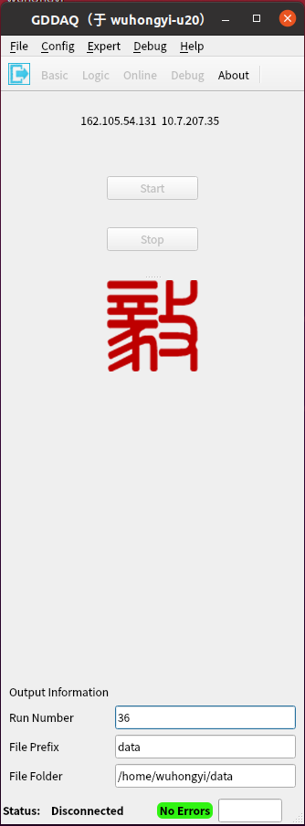
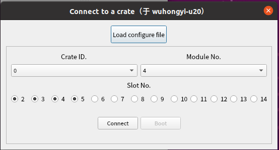

Qt 图形交互界面
# tar -zxvf PixieSDK-4.2.1.tar.gz
# cd PixieSDK-4.2.1
unzip PixieSDK-master.zip
cd PixieSDK-master
mkdir build
cd build
cmake -DCMAKE_INSTALL_PREFIX=../../pixiesdk ..
make
make install
进入 GUI_Qt 目录，执行以下命令即可弹出登陆界面
./gddaq
输入用户名 (admin)、密码(admin)后，弹出主控制界面。 Qt 版图形界面集成了参数设置、数据采集、在线监视等功能。
主控制界面
开启获取主界面之后，点击左上角的 “File”，下拉第一个选项 “connect to device”，弹出机箱初始化界面。
点击 “Load configure file” 按钮， 选择配置文件。然后点击 “Connect” 按钮，如果连接机箱成功，则按钮 “Boot” 变成可点击。接着点击按钮 “Boot”，等待其初始化完成。完成初始化后界面会自动关闭。主控制界面的 “Start” 按钮变成可点击。
点击左上角的 “File”，下拉选项 “Output configure”，弹出数据存储设置路径。默认参数保存在隐藏文件 “~/.GDDAQ/GDDAQ_Run.conf”, 用户可在启动软件之前修改该文件，或者通过该页面来更改配置。修改配置之后，点击按钮 “OK” 保存设置并自动关闭该设置界面。